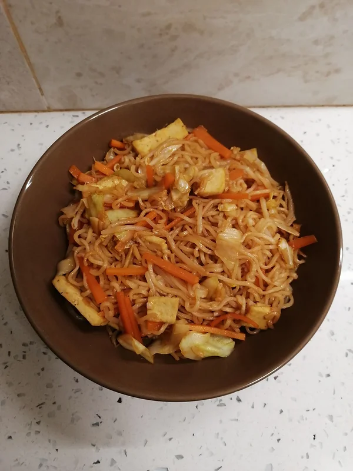
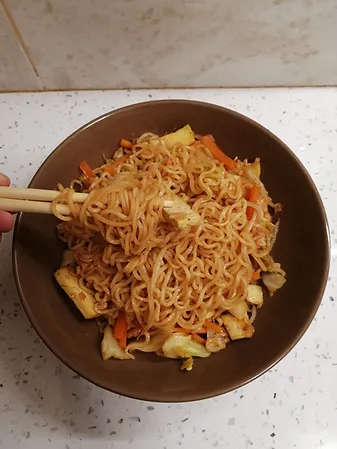

Yakisoba Vegan
Tempo de preparação
7min
Horas de Cozimento
15min
Tempo Total
22min
Porções
1/2

Ingredientes
- 3 fatias de tofu cortado em retângulos finos
- sal q.b
- pimenta preta q.b
- 1 alho picado
- ½ alho francês cortado em rodelas
- 1 cenoura cortada em palitos finos
- 3 folhas de couve coração cegadas
- 1 punhado de rebentos de feijão de lata
- 1 embalagem de noodles
- 2 csp de molho de soja
- 1 csp de vinagre de sidra
- 1 csp de azeite
- 2 csp de ketchup

Instruções
- Pré aqueça o forno a 180ºC.
Tofu:
- Retire o excesso de água das fatias retangulares de tofu com papel de cozinha.
- Num tabuleiro forrado com papel vegetal, disponha as fatias de tofu e tempere com sal e pimenta preta. Leve ao forno e retire quando o tofu estiver dourado.
Molho:
- Numa tigela coloque duas colheres de sopa de molho de soja, 1 colher de sopa de vinagre de sidra, 1 colher de sopa de azeite e duas colheres de sopa de ketchup. Misture tudo e reserve.
Massa:
- Coloque a embalagem de noodles sem os temperos a cozer em água a ferver durante o tempo que a embalagem indica.
- Quando estiver cozida, escorra a água e guarde meio copo da água da cozedura da massa.
Vegetais:
- Numa sertã anti aderente, coloque um fio de azeite, o alho, o alho francês, as folhas de couve coração, as tiras de cenoura e salteie até a couve e a cenoura cozerem ao ponto al dente.
- Adicione as tiras de tofu, os noodles, o molho e o meio copo de água da cozedura da massa. Adicione também um punhado de rebentos de feijão.
- Deixe a saltear até a massa absorver o sabor e o molho. Está pronto a empratar! Desafio a comer de pauzinhos :)